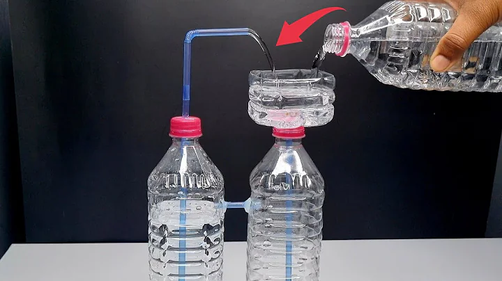

6:30:00

HTML & CSS Full Course - Beginner to Pro
12M views ·2 years ago
5:00

Science in Life || Explained in Detail || Bright Keralite
23k views ·12 days ago
5:00
Easiest Pure CSS Parallax Effect Tutorial
69k views ·1 year ago
18:08

18 Year Old Loses ₹15 Lakh Job!
10k views ·1 hours ago
5:00
vid Richest India States 2024
1.2M views ·3 months ago

5:00
"DIY Non-Electric Automatic Water Fountain from Plastic Bottle!" | Science Project
12k views ·11 months ago